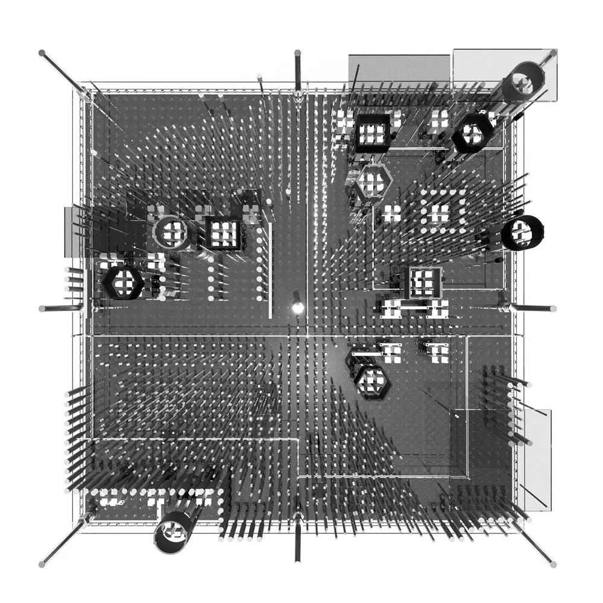
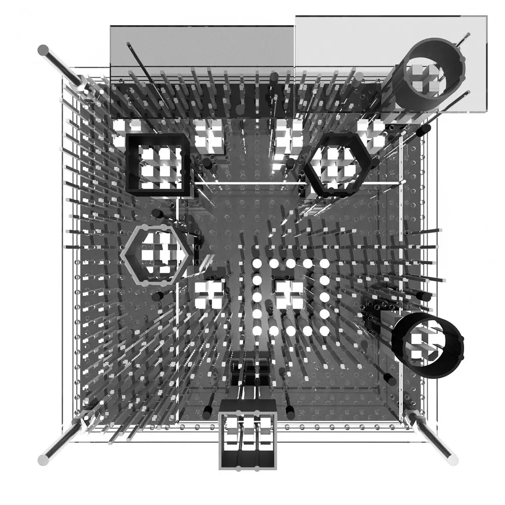
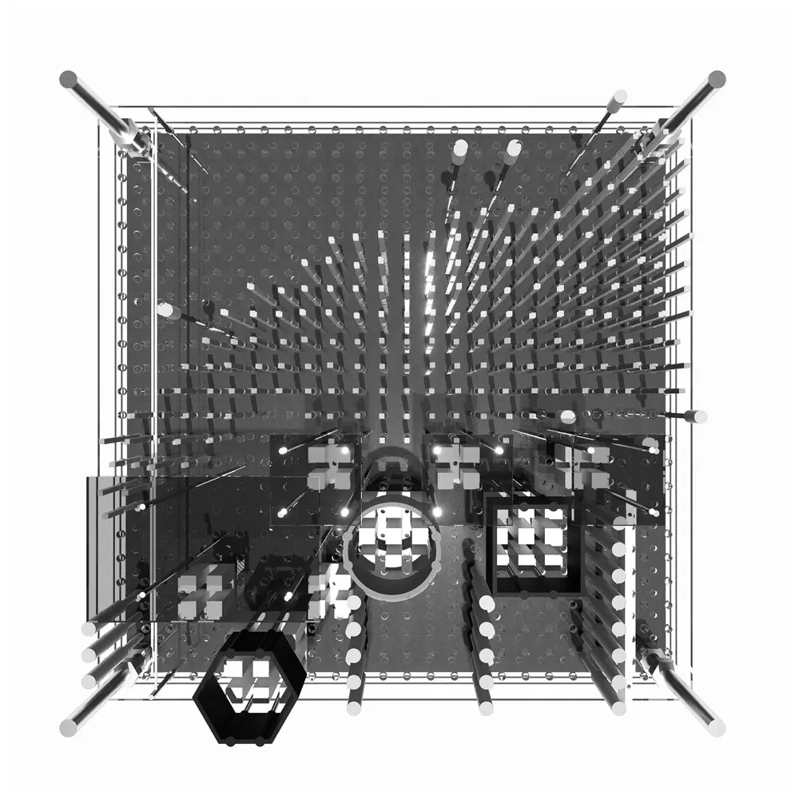

| 2601 | [Un]Predictable Suburbia | Thesis |
Suburbia presents itself as an uninspiring, homogenous landscape, where our personal lot lines define our boundaries of care. Characterized by detached houses with private gardens and fences, the controlled and uniform design of these spaces, which are rooted in historical policy, greatly limits potential for social and spatial complexity. As experts in charge of understanding the rules, guidelines, and best practices that dictate the design of urban zones, we often confront this entrenched reality, built through decades of regulatory frameworks.
This thesis anchors itself within urbanism, exploring the boundaries and intersections between rules, guidelines, and suggestions. It tests various design methodologies that work within established frameworks of control to subvert suburban monotony and enable greater agency and complexity. Rather than rejecting urban rules outright, the research examines how both control and agency can coexist to produce varied and unexpected outcomes within a suburban context.
Drawing upon the work of Michael Sorkin’s Local Code, Alex Lehnerer’s Grand Urban Rules, Ekim Tan’s Play the City, and Archizoom’s No Stop City, the thesis develops a novel, iterative design methodology combining analytical study with tests of agency and complexity. This method critically examines and reimagines urban rules through design experimentation aimed at uncovering new possibilities for suburban transformation.
This thesis offers both a theoretical critique of suburban spatial and social homogeneity, as well as a practical methodology for designers to engage with and reshape suburban environments. By reframing suburbia as a space of controlled agency, this work encourages architectural and urban innovation within traditionally rigid, mono-programmatic landscapes. Thus, suburbia is positioned not as a fixed condition, but rather a mutable environment capable of supporting complexity and social diversity.
Committee: Lola Sheppard (supervisor), Fiona Lim Tung (committee), Simon Rabyniuk (external)
Key Words: Control, Agency, Suburbia, Controlled Agency, Generative City Gaming, Urbanism, Complexity, Heterogeneity, Homogeneity, Interactive Model, Abstraction, Notation, Loose Rules
Recognition: Thesis Research & Design Achievement Award, Waterloo Architecture Projects Review 2025
Below are excerpts from the research conducted for the Thesis: [UN]PREDICTABLE SUBURBIA: An Exploration of Rules, Representation & Rigidity. The full thesis can be accessed via the University of Waterloo’s institutional repository here. All images are by Nhuy Cindy Ma unless otherwise stated.
The DNA of the Suburbs

Plan oblique drawings of conventional suburban components: extensive road networks, separated programs, and rows of private lots.
In discussions of suburbia, the question of definition is often neglected, with individual assumptions serving as a pretext for theories of suburbia. This can be problematic because perceptions of what defines a suburb physically, socially, or culturally, vary widely across disciplines and individual worldviews. Therefore, before engaging in any speculation or subversion of the suburbs, it is necessary to establish a working definition within the context of the thesis. While not exhaustive, the following elements provide a foundational framework for this exploration.
This thesis broadly understands the suburbs as residential communities characterized by physical and social homogeneity, reinforced by privatized space, a reliance on vehicular transport, and a separation of functions. The suburbs embody the ultimate model of top-down planning, where no unpredictability (spatial, ecological, social) is possible.
A Study of Rules

The potential for semantics to shape both the breadth and specificity of rules.
In his 2009 work, Grand Urban Rules, Alex Lehnerer documents 115 rules that shape the form of the contemporary metropolis, providing explanation and context to each rule along with the rationale behind their existence. Each rule is accompanied by a parti drawing, which both clarifies its meaning and highlights its playful nature.
Lehnerer unravels the common misconception that rules are controlling mechanisms, highlighting instead their potential to generate agency through control. He acknowledges the negative reputation of rules, especially among architects who often see building laws as constraints to creative freedom. Citing the words of Le Corbusier, he notes that “there are good and bad regulations, those that restrict freedom of movement, and those that actually generate it in the first place,” Lehnerer challenges this reputation, arguing that rules are not exclusively restrictive frameworks, but rather tools that mediate and adjust levels of freedom within a system.
Lehnerer’s analysis reveals that the flexibility of regulatory phrasing can open a wide range of potential possibilities. The use of wording such as “it must be”, “potentially allowable, or “conceivably permissible” significantly influences how much agency an individual has to subvert, resist, or reinterpret a given rule. Therefore, the degree of agency granted by a rule lies in what remains unspecified within the blurring of boundaries. For example, an absolute standard might mandate that a building “must be exactly” three stories tall, whereas a more flexible standard might mandate that a building “can be up to” three stories tall. This subtle shift in language opens the possibility for varied outcomes. These “loose rules”, as Lehnerer calls them, possess the capacity to create a range of spatial and social configurations.
“Codes are Rosetta Stones, keys or prescriptions for acts of translation. Poised between fantasy and construction, codes—if they are both broad enough and precise enough—can be channels of urban invention.” — Michael Sorkin, Local Code, p.127

All urban rule cards produced for this thesis. The intent of this exercise is not to be exhaustive, but to get a sense for what rules currently exist as well as how rules could be reframed to achieve unexpected, yet desirable outcomes.
This thesis draws inspiration from Sorkin’s rules, its absurdity, lack of specificity and other times, hyper-specificity. Combined with Lehnerer’s analytical observations on the nature of rules and method of visualizing them, the following exercise becomes an exploration of both existing and subversive urban rules.
- What existing rules currently shape the form of the suburbs?
- How could these existing rules be rephrased/reframed, adjusted, flipped, and/or transformed to allow for more physical and social complexity?

Who has a stake in suburbia, and what powers and priorities do they bring?
Discussions of urban and architectural design often center on negotiation between top down and bottom-up stakeholders. While this binary provides a useful baseline, it is important to consider the role of non-human stakeholders that shape and are shaped by suburban environments.
These player profiles represent some of the stakeholders involved in the shaping of suburbia. Note the inclusion of top down, bottom up, and non-human stakeholders. The last of which are voiceless agents, often represented through proxy parties.
A Test of Agency

Graphic showing the interactive model prototype.
An interactive model was developed for presentation and use during the Thesis Exhibition held at the University of Waterloo on April 1st, 2025.
Using QGIS, the roads, parks and lot lines were extracted and exported to scale for a 1:1000 model. The base was laser-cut from plywood in two parts, with additional components cut from the same material for efficiency. Simplified versions of the catalyst and stakeholder cards were produced, along with a legend to assist with reading the model and its components.
The steps to using the interactive model are simple:
- The designer(s) select a stakeholder card at random. Each card assigns a set of priorities for the designer to consider during the design session.
- The group selects a catalyst card at random. This card introduces a set of conditions and challenges for the group to grapple with in the design session.
- The designer(s) are given 10 minutes to reimagine the suburbs under these conditions.
While minimal in structure, these parameters establish a preliminary framework that grants users a degree of agency to generate outcomes for reflection and iteration.
A Test of Notation

Don Mills, North York: Satellite & Notational Suburban Fragments

Medium and small scale suburban fragments. Redesigned using a language of notation.
Andrea Branzi and Archizoom’s No Stop City provided a methodological framework for this study of notation. Just as its diagrams make the underlying systems of the city visible through the dissolution of form, this thesis seeks to expose, dissolve, and subvert the rigid structures of suburbia.
By abstracting urban elements like roads, buildings and parks into fields and voids, the study reframes the suburb as a network of overlapping relationships rather than discrete forms. Through a language of notation, the hierarchy of urban elements is suspended, leaving only the relationship between these elements to be interpreted and reconfigured through design.

Before and after, spatialized notational fragments. Developed as an aid to understand how abstracted, notational changes might translate to real conditions.
Interactive Model


As a culminating exercise for this thesis and as an evolution of the notational drawing methodology developed in the previous step, I translate this two-dimensional method into three-dimensional space in the form of an interactive model.
In a similar manner to the notational drawing method, the freedom afforded by this method allows the designer to approach, visualize, and identify urban space as a potentially complex system for intervention and intensification. In the spirit of the interactive model produced in the Test of Agency, this model is interactive and its components movable. Given differing starting conditions and enough components to “shop” for, one could visualize and design any fragment of suburbia.


